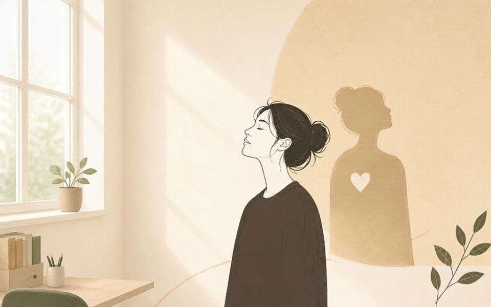

8 stycznia 2025 · Justyna Siwek
Na jakich filarach oprzeć pewność siebie?
🤔 Czy można zmienić swój brak pewności siebie? Nie tylko w konkretnej sytuacji, ale tak na stałe?
Takie pytanie zadaje sobie wiele osób zmagając się na co dzień z niską samooceną, która potrafi ujawniać się w najmniej oczekiwanych momentach i utrudniać skutecznie życie.
😀 Odpowiedź jest prosta i sądzę, że dla wielu osób satysfakcjonująca: TAK.
Wymaga to czasu i wysiłku, ale jest możliwe. Warto popracować nad uświadomieniem sobie swoich zalet, wszelkich mocnych stron, aby nie koncentrować się tylko na słabościach. Każdy przecież je ma. Powtarzanie sobie przed lustrem, że jesteśmy świetni nie wystarcza, jeśli nasz brak pewności siebie jest silniej, głębiej zakorzeniony.
👉 Niskie poczucie własnej wartości może mieć swoje źródło we wcześniejszych doświadczeniach, także tych z naszego dzieciństwa i młodości, które ukształtowały głęboko tkwiące w nas przekonania o naszych możliwościach i ograniczeniach. Możemy nie zastanawiać się na co dzień, jakie myśli towarzyszą nam, kiedy odczuwamy lęk przed nowymi wyzwaniami, co nas tak naprawdę blokuje. Możemy też nie rozumieć skąd biorą się negatywne emocje, które towarzyszą naszym działaniom. Dlatego trzeba znaleźć źródło braku wiary we własne siły i uważnie mu się przyjrzeć. Przepracowanie negatywnych, głęboko w nas tkwiących przekonań o sobie jest trudniejsze, wymaga więcej czasu, czasami też profesjonalnego wsparcia, ale daje lepsze i długotrwałe efekty.
👉 Przy okazji – osoby, które często uważamy za bardzo pewne siebie, bo na takie wyglądają, wkładają dużo wysiłku w to, aby właśnie takie wrażenie sprawiać. W rzeczywistości takiej pewności siebie wcale nie mają. Osoby o faktycznym wysokim poczuciu własnej wartości nie muszą ciągle okazywać i podkreślać swojej pewności. Wręcz przeciwnie nie mają obaw przed okazywaniem swoich wątpliwości, czy wad, bo niczego im to nie ujmuje. Mogą być autentyczne i nie obawiają się tego, bo ich pewność siebie zbudowana jest na solidnych filarach.
Chcesz trwale wzmocnić swoją pewność siebie?
Sprawdź, jak mogę Ci pomóc, albo umów się na pierwszą rozmowę.
Więcej o rozwoju osobistym i budowaniu pewności siebie Umów wizytę